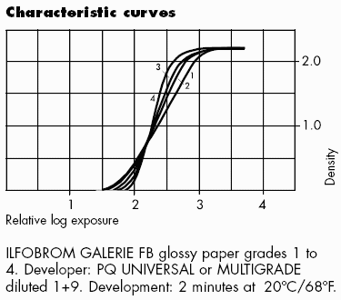
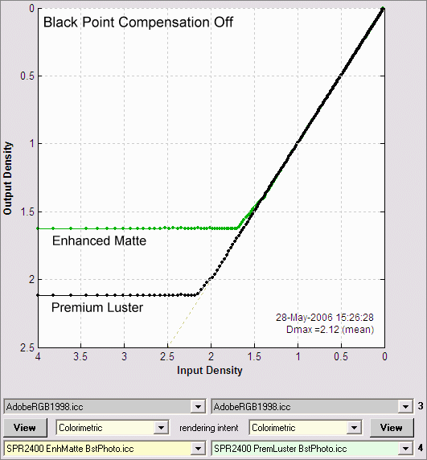
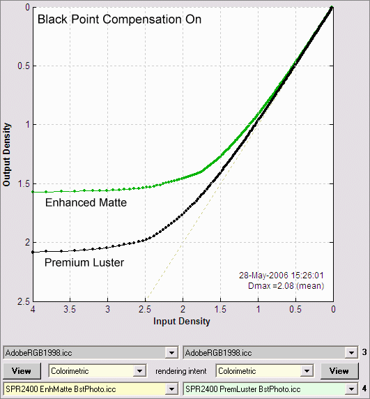
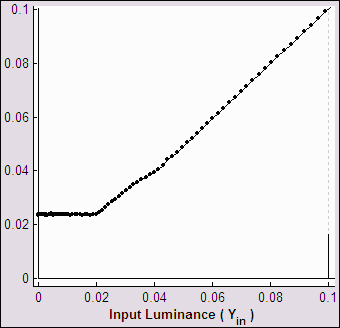
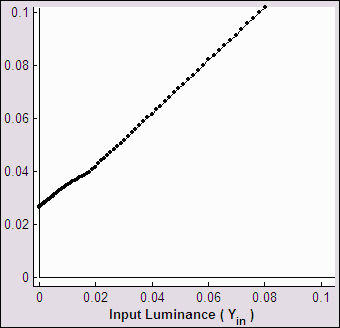

Black point compensation (BPC) can be a source of bewilderment for digital printmakers. There is plenty of conflicting advice on whether or not to check the BPC box when making prints from Photoshop or other programs. This page may contain the first clear explanation of BPC.
BPC must be explained visually; verbal descriptions don't cut it. For example, Adobe's description of BPC for colorimetric rendering on the Color.org website states,
Otherwise, estimate the Destination Black Point from the round-trip curve. The round trip curve should look like a nearly constant section at the black point, with a corner and a nearly straight line to the white point. Estimate the length of the constant section to estimate the destination black point. The problem is that there is often noise in the constant section, and the corner is often rounded. Ignore any "toe" around the black point and estimate exactly where the extrapolated round trip curve would intersect the nearly constant black limited area. Fit a least square error quadratic curve though the shadow section of the curve, and use the point where this curve intersects the L*=0 round trip value as the Destination Black Point.
Got it? Well... It might make a little more sense after you study the illustrations below. (I just know you won't be able to sleep until you figure out where the extrapolated round trip curve intersects the least square error quadratic, will you?)
The figures below contain Gamutvision™ results without and with BPC for the Epson R2400 printer with Enhanced Matte and Premium Luster papers. All results are derived from Epson-supplied ICC profiles, using Gamutvision's B&W density response display, which is the digital counterpart (with axes reversed) of characteristic curves for photographic paper, illustrated on the right for Ilfobrom Galerie FB glossy paper. These curves are displayed logarithmically. Density is defined as -log10(reflected light/incident light), proportional to -log10(luminance). Increasing density by 1 decreases brightness by a factor of 10; doubling or halving exposure (or brightness) corresponds to a density change of 0.301. The maximum printable density (Dmax) for the Ilford Galerie FB paper is an outstanding 2.2 (a very deep black). |
 |
BPC (in Gamutvision as well as Photoshop and other editors) applies only to Colorimetric rendering intents. BPC is always on for Perceptual intent, regardless of whether the box is checked. Details below. In Gamutvision, BPC is set with a dropdown menu which has four settings: (Off, 1>2 (Left data flow), 3>4 (Right data flow), and Both (On).
Print density is proportional to file density for file densities less than the maximum printable density (Dmax). (Dmax = 1.63 for Enhanced Matte paper; Dmax = 2.12 for Premium Luster paper.) Pixels with lower values (representing higher densities) print at paper black, i.e., they are clipped (chopped off); no detail is visible. File and print densities are explained below.

Print density rolls off smoothly (is rounded) in the region around density = Dmax. Tonal detail is still present where file density is greater than Dmax. Some tones are lightened, but print density approaches Dmax at the lowest pixel levels.

Summary: With BPC off, response is linear with the lowest pixel levels clipped (chopped off) at Dmax; with BPC on, response is rounded, i.e., it has a "toe" region around Dmax where some detail is present. Tones in the "toe" are lightened slightly, but tones for the lowest pixel levels approach Dmax.
In this author's opinion, the best match between the monitor image and the print (for fine art photography) takes place when BPC is turned on. My default print setting is Relative Colorimetric rendering intent with Black point compensation on. BPC should probably be turned off for scientific or technical imagery.
When you look at the linear results: Output vs. Input luminance, the LittleCMS BPC algorithm becomes even clearer.
 BPC off |
 BPC on |
Output vs. Input Luminance (linear display) |
|
These plots contain exactly the same data plotted above for Epson Enhanced Matte (BstPhoto). The only difference is that they are linear: they plot luminance rather than density (-log10(luminance)). A minimum luminance of 0.024 (relative to a maximum of 1.0), shown in the left plot (BPC off), is equivalent to a maximum density of 1.62.
With BPC off, Output luminance tracks Input luminance down to the medium's minimum luminance (Lmin = 10-Dmax ); it is constant (equal to Lmin) for lower values of input luminance. With BPC on, Output tracks Input linearly all the way down. The equations (for Input and Output luminance normalized to 1) are,
| BPC off | Output luminance = Input luminance; Lmin < Input luminance ≤ 1 Output luminance = Lmin; 0 ≤ Input luminance ≤ Lmin |
| BPC on | Output luminance = Lmin + (1-Lmin) × Input luminance |